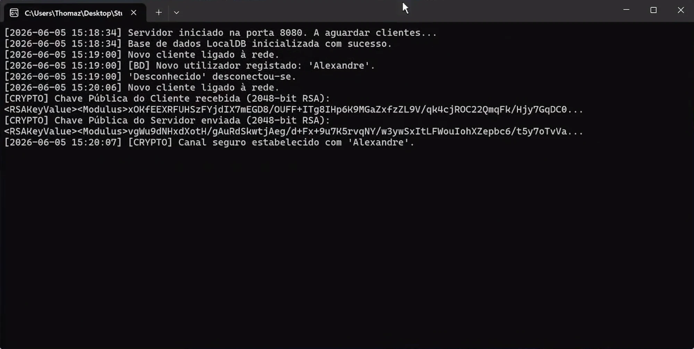

SecureChat
Um chat de grupo em que as mensagens viajam cifradas e assinadas.
Ver o código- Ano
- 2026, 1.º ano do CTeSP
- Papel
- Equipa de 2, com Paulo
- Estado
- Concluído
- Tecnologias
- C#, Windows Forms, TCP, SQL Server


O desafio
Construir um chat em que várias pessoas falam na mesma sala, em tempo real, sem que alguém a escutar a rede consiga ler ou alterar as mensagens.
O que fizemos
- Servidor TCP que aceita vários clientes ao mesmo tempo.
- Registo e início de sessão, com palavras-passe guardadas como hash com salt.
- Troca de chaves RSA de 2048 bits e mensagens cifradas com AES.
- Assinatura de cada mensagem com SHA-256, verificada do outro lado.
- Comandos /users e /msg para ver quem está online e enviar mensagens privadas.
- Uma cor à escolha para cada utilizador.
Como funciona
Cliente e servidor em C#, a comunicar por TCP com o ProtocolSI. Os utilizadores ficam numa base de dados SQL Server LocalDB.
O que aprendi
A diferença entre cifrar, assinar e fazer hash, e porque é que cada uma resolve um problema diferente.